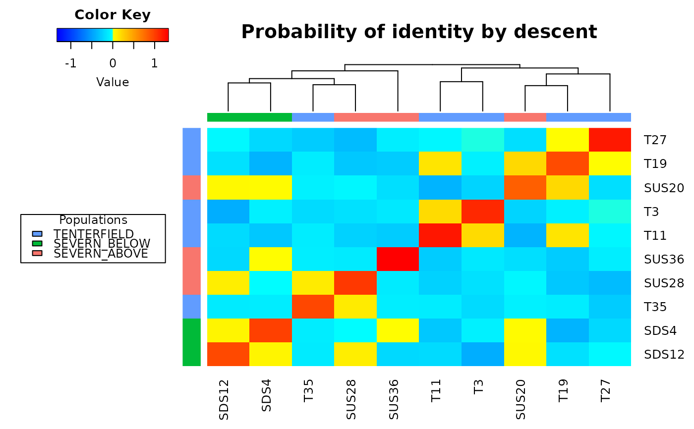

gl.grm.RdThis function calculates the mean probability of identity by state (IBS) across loci that would result from all the possible crosses of the individuals analyzed. IBD is calculated by an additive relationship matrix approach developed by Endelman and Jannink (2012) as implemented in the function A.mat (package rrBLUP).
gl.grm(
x,
plotheatmap = TRUE,
palette_discrete = discrete_palette,
palette_convergent = convergent_palette,
legendx = 0,
legendy = 0.5,
verbose = NULL,
...
)Name of the genlight object containing the SNP data [required].
A switch if a heatmap should be shown [default TRUE].
A discrete palette for the color of populations or a list with as many colors as there are populations in the dataset [default discrete_palette].
A convergent palette for the IBD values [default convergent_palette].
x coordinates for the legend[default 0].
y coordinates for the legend[default 1].
Verbosity: 0, silent or fatal errors; 1, begin and end; 2, progress log ; 3, progress and results summary; 5, full report [default 2 or as specified using gl.set.verbosity].
Parameters passed to function A.mat from package rrBLUP.
An identity by descent matrix
Two or more alleles are identical by descent (IBD) if they are identical copies of the same ancestral allele in a base population. The additive relationship matrix is a theoretical framework for estimating a relationship matrix that is consistent with an approach to estimate the probability that the alleles at a random locus are identical in state (IBS).
This function also plots a heatmap, and a dendrogram, of IBD values where each diagonal element has a mean that equals 1+f, where f is the inbreeding coefficient (i.e. the probability that the two alleles at a randomly chosen locus are IBD from the base population). As this probability lies between 0 and 1, the diagonal elements range from 1 to 2. Because the inbreeding coefficients are expressed relative to the current population, the mean of the off-diagonal elements is -(1+f)/n, where n is the number of loci. Individual names are shown in the margins of the heatmap and colors represent different populations.
Endelman, J. B. (2011). Ridge regression and other kernels for genomic selection with r package rrblup. The Plant Genome 4, 250.
Endelman, J. B. , Jannink, J.-L. (2012). Shrinkage estimation of the realized relationship matrix. G3: Genes, Genomics, Genetics 2, 1405.
Other inbreeding functions:
gl.grm.network()
gl.grm(bandicoot.gl[1:20,])
#> Starting gl.grm
#> Processing genlight object with SNP data
#>

#> Completed: gl.grm
#>